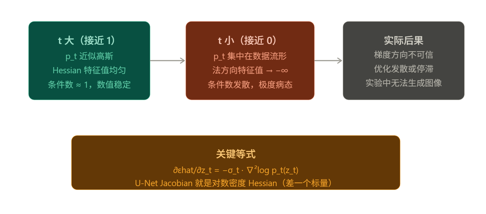
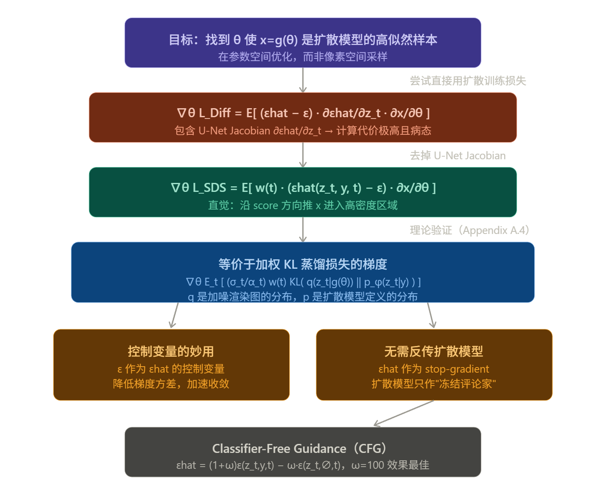
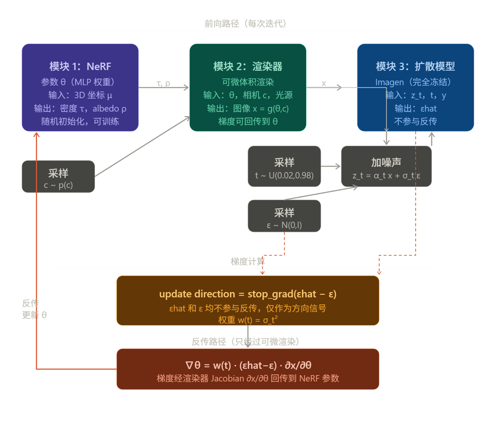
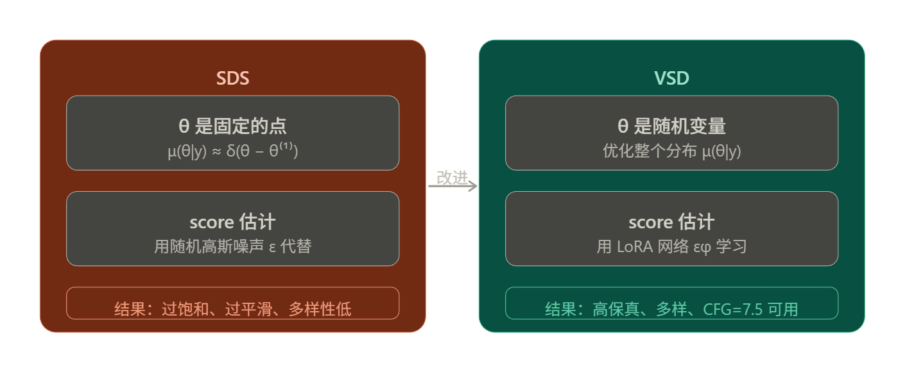
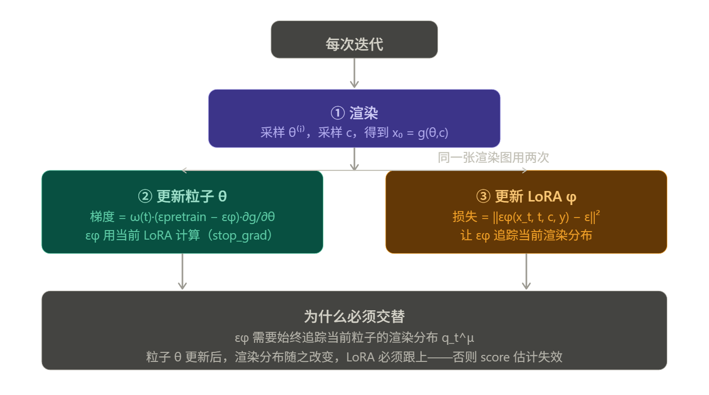

SDS & VSD
SDS 要解决的根本问题
出发点很简单：我们有一个预训练的 2D text-to-image 扩散模型，想用它来生成 3D 内容。但扩散模型只能在像素空间里采样，而我们想要的是 NeRF 的参数空间里的一个点 θ，使得从任意角度渲染出来的图像都"看起来像真实图像"。
这就是可微图像参数化（DIP）的框架：用一个可微渲染函数 g(θ) 把 3D 参数映射到图像，然后设计一个损失函数，让这个图像在扩散模型眼中是高似然的。
训练损失
最自然的想法是直接最小化扩散模型的训练损失：
对 θ 求梯度展开后得到：
中间那项 U-Net Jacobian 是致命问题：计算代价极高，而且在小噪声水平下条件极差（它近似于边缘密度的 scaled Hessian），实验中根本无法产生合理结果。
为什么 U-Net Jacobian 是致命的
先把完整梯度写清楚，明确每一项的来源。从扩散训练损失出发： $$ \mathcal{L}{\text{Diff}}(\phi, \mathbf{x}) = \mathbb{E}_t; y, t) - \varepsilon|^2_2\right] $$ 其中 $\mathbf{z}_t = \alpha_t \mathbf{x} + \sigma_t \varepsilon }\left[w(t)|\hat{\varepsilon}_\phi(\mathbf{z\(，\)\mathbf{x} = g(\theta) $。对 θ 求梯度，链式法则展开有三层：
注意 $\frac{\partial \mathbf{z}_t}{\partial \mathbf{x}} = \alpha_t \mathbf{I} $，可以并入 $w(t) $，所以问题完全集中在第②项。
问题一：维度爆炸。 设图像维度 $d = H \times W \times C $（64×64×3 = 12288），U-Net 的输入输出都是 $\mathbb{R}^d $，则这个 Jacobian 是 $d \times d $ 的矩阵，存储需要约 $12288^2 \times 4\,\text{bytes} \approx 600\,\text{MB} $，每次迭代都需要对整个 U-Net 做完整反传来填满它，代价与预训练扩散模型的一步训练相当。
问题二：数值病态。 这是更本质的问题。利用 Tweedie 公式，扩散模型的 score function 满足： $$ \nabla_{\mathbf{z}t} \log p_t(\mathbf{z}_t) = -\frac{\hat{\varepsilon}\phi(\mathbf{z}t, t)}{\sigma_t} $$ 对两边再关于 $\mathbf{z}_t $ 求导，得到 Hessian： $$ \frac{\partial^2 \log p_t}{\partial \mathbf{z}_t^2} = -\frac{1}{\sigma_t} \frac{\partial \hat{\varepsilon}\phi}{\partial \mathbf{z}t} $$ 因此： $$ \frac{\partial \hat{\varepsilon}\phi}{\partial \mathbf{z}t} = -\sigma_t \cdot \nabla^2_t) $$ 这个 Jacobian }_t} \log p_t(\mathbf{z就是对数密度的 Hessian（乘以 $-\sigma_t $） 。当 $t \to 0 $ 时，$p_t $ 趋向于尖锐的数据分布，Hessian 在数据流形法方向上特征值趋向负无穷，而在流形切方向上趋向零——条件数发散，矩阵极度病态，梯度方向完全不可信。

训练流程
\(z_t\) 不是 3D 模型本身，而是"3D 模型渲染出的图像，再加上噪声"。整个流程分两步：
第一步：渲染 — NeRF 参数 θ 在相机位姿 c 下，通过可微渲染函数 g 得到一张 2D 图像：
第二步：扩散前向加噪 — 对这张图像加入高斯噪声，模拟扩散过程的第 t 步：
所以 z_t 本质上是一张被噪声污染的渲染图，噪声程度由时间步 t 控制。
用伪代码把采样过程写清楚：
# 每次迭代
# ① 三个独立采样
t = uniform(0.02, 0.98) # 随机时间步
ε = randn(image_shape) # 随机高斯噪声
c = sample_camera() # 随机相机位姿
# ② 渲染：3D → 2D
x = nerf_render(θ, c) # x = g(θ, c)，干净图像
# ③ 扩散前向加噪：2D → 噪声空间
α_t, σ_t = get_noise_schedule(t)
z_t = α_t * x + σ_t * ε # z_t，加噪渲染图
# ④ 冻结扩散模型预测噪声
ε_hat = frozen_diffusion(z_t, t, y) # 无梯度
# ⑤ 计算更新方向并反传
update_dir = stop_grad(ε_hat - ε) # 方向信号，无需反传扩散模型
grad_θ = w(t) * update_dir · ∂x/∂θ # 反传只走 NeRF 渲染路径
# ⑥ 更新 NeRF 参数
θ = optimizer.step(θ, grad_θ)
Note
(εhat − ε) 这个差值的含义非常直观：εhat 是扩散模型"认为图像里应该有的噪声结构"，ε 是我们实际加进去的纯随机噪声。两者之差就是扩散模型在说"你渲染出的图像，应该往这个方向改"。
当 t 较大时，图像被大量噪声掩盖，扩散模型给出的是粗粒度的整体形状方向；当 t 较小时，图像接近干净，扩散模型关注的是细节纹理。对所有 t 加权期望，就同时优化了从粗到细的所有层次，这是 SDS 相比直接优化像素更稳定的核心原因。
SDS 的核心推导
既然 U-Net Jacobian 不可用，DreamFusion 的洞察是：直接去掉这一项，只保留噪声残差乘以渲染 Jacobian：
这看起来像是凑出来的工程技巧，但论文 Appendix A.4 证明了它有严格的理论基础——它恰好是一个加权概率密度蒸馏损失的梯度：

Appendix A.4 的推导要点值得细说一下。对单个 KL 项展开梯度时会出现两部分：
- (A) 前向过程的熵梯度：由于前向过程方差固定，熵对参数的梯度为零。但可以用"Sticking-the-Landing"技巧保留路径导数项，它与 (B) 项高度相关，作为控制变量能显著降低方差。
- (B) log p_φ 的梯度：通过 Tweedie 公式连接到 score function，最终化简为 −(α_t/σ_t)·εhat·(∂x/∂θ)。
两项合并，正好消掉 U-Net Jacobian，得到最终的 SDS 梯度。
DreamFusion 的完整架构
SDS 的架构本质上只有三个独立模块：NeRF、可微渲染器、冻结扩散模型。训练时这三个模块串联成一条前向路径，梯度只从扩散模型的输出反传回 NeRF，扩散模型本身完全不参与反传。

图里有一条需要特别注意的界限：εhat 和 ε 用虚线红箭头接入梯度计算，表示它们只提供方向数值，不传递梯度。实线红箭头才是真正的反传路径，它只走渲染器这一条路回到 θ。
几个容易混淆的点说清楚：
为什么扩散模型不参与反传？ 因为计算 εhat 这一步用了 stop_gradient。扩散模型只是一个"冻结的评论家"，每次迭代告诉渲染图像"应该往哪个方向改"，但它的内部权重和中间计算完全不进入计算图。这也是 SDS 在工程上可行的关键原因——否则每步都要对一个十亿参数的 U-Net 做反传，内存和计算都不可接受。
t、ε、c 三个采样是完全独立的。 每次迭代重新采，互不依赖。t 决定加多少噪声，ε 是具体的噪声实例，c 决定从哪个角度看 NeRF。
梯度真正流过的路径只有一条：扩散模型输出 → 减去 ε → 乘 w(t) → 乘渲染器 Jacobian ∂x/∂θ → 更新 NeRF 权重。整个系统里唯一被训练的是 NeRF 的 MLP 参数。
Note
y 是文本 prompt 的嵌入向量，是扩散模型的条件输入。具体来说，在 DreamFusion 里 y 是用 T5-XXL 文本编码器把用户输入的文字（比如 "a DSLR photo of a peacock on a surfboard"）编码成的向量，这个向量在整个训练过程中固定不变，每次迭代都原样传给扩散模型。
几个关键的工程决策
视角相关 prompt 是 DreamFusion 能生成一致 3D 几何的重要原因之一。文本往往描述的是正面视角，如果不加视角信息，模型会把内容"画"在每个面上形成多面 Janus 问题。论文的做法是根据相机仰角和方位角动态拼接 "front view / side view / back view / overhead view"。
着色 + 无纹理渲染 是几何质量的保障。如果只优化有颜色的渲染，模型倾向于把内容"贴"在平面上而不是真正建立 3D 几何。引入随机光源着色，并有 50% 概率渲染无纹理（albedo 全白）的结果，迫使几何本身也必须正确。
CFG=100 的必要性 来自 SDS 的众数搜索本质。SDS 最小化的是 reverse KL，具有 mode-seeking 性质——它会坍缩到最高概率密度的单一模式。这意味着必须用极大的引导权重来"逼"它走向足够清晰的结果，代价是多样性极差、不同随机种子几乎产生相似结果。这正是 VSD 后来重点解决的问题。
SDS 与 VSD 的承接关系
至此可以清楚地看到 SDS 遗留的核心问题是什么：它用固定的高斯噪声 ε 作为 q 的 score 估计，相当于假设当前渲染图像服从 Dirac delta 分布。这个估计太粗糙——在低密度区域几乎没有方向信息，只能靠 CFG=100 强行放大信号，结果过饱和、过平滑、多样性低。VSD 做的事情，就是把这个粗糙的 ε 换成一个真正学过渲染图像分布的 LoRA 网络 εφ，彻底解决了这个估计误差的根源。
好，现在有了 SDS 的完整基础，我们来看 VSD 如何在每个环节上做出改进。
从 SDS 的问题出发
SDS 有一个根本性的假设：把 3D 参数 θ 当成一个固定的点来优化，其变分分布是 Dirac delta：
这导致 score 的估计极度粗糙。回顾 SDS 梯度：
第二项 ε 是纯随机高斯噪声，它对当前渲染图像的分布一无所知。这意味着梯度方向只有第一项在提供信息，必须靠 CFG=100 强行放大才能得到清晰结果，代价是过饱和、过平滑、多样性极低。
VSD 的核心问题是：能不能用一个真正了解当前渲染分布的网络来替代这个无信息的 ε？
从点优化到分布优化
VSD 把 θ 从常量变成随机变量，优化目标从找一个好的 θ，变成找一个好的分布 μ(θ|y)：
这是在函数空间 \(\mathcal{W}_2(\Theta)\)（Wasserstein 空间）上的优化，不再是参数空间里的点优化。它自然容纳了"同一个 prompt 可以对应多个合理 3D 场景"这个事实。

粒子化变分推断
直接在函数空间优化 μ 是不可行的。VSD 采用粒子化变分推断（Particle-based VI）：用 n 个具体的 3D 参数 \({\theta^{(i)}}_{i=1}^n\) 来代表分布 μ，每个粒子就是一个独立的 NeRF 或 Mesh。
优化目标变成让这些粒子的分布沿 Wasserstein 梯度流演化，理论上当优化收敛时，粒子就是从最优分布 μ* 中采出的样本（Theorem 2）。
由此推导出每个粒子的更新规则（ODE）：
整理后得到 VSD 梯度：
与 SDS 对比，唯一的差异就是把无信息的 ε 换成了 εφ。但这一换，意义完全不同。
\(\epsilon_\phi\) 是什么，为什么用 LoRA 实现
εφ 需要估计的是当前渲染图像分布 \(q_t^\mu\) 的 score function，即：
它的训练目标是：给定当前所有粒子的渲染图像，学会预测加在这些图像上的噪声：
这就是标准的扩散去噪目标，只不过训练数据是 NeRF 的渲染图，而不是真实图像。
选择 LoRA 而不是从头训练一个小网络，原因有两个：第一，LoRA 建立在预训练扩散模型权重之上，天然继承了对自然图像的理解，以及对文本 y 的语义对齐能力。第二，当前渲染图像数量极少（只有 n 个粒子，n≤4），独立小网络根本没有足够数据拟合，而 LoRA 的低秩微调只需要极少数据就能收敛。
训练的交替结构
VSD 有两套参数需要更新，它们交替进行：

SDS 是 VSD 的特例
这是论文的一个优雅结论，值得单独说清楚。
当 VSD 退化为 n=1 个粒子，并且不训练 LoRA、直接用高斯 δ 分布近似 \(q_t^\mu\) 时：
此时 score 估计退化为：
εφ 变成了 ε，VSD 梯度完全变回 SDS 梯度。这说明 SDS 的本质缺陷不是公式本身写错了，而是对渲染分布的 score 估计太过粗糙——用 Dirac delta 近似一个复杂分布，score 估计在低密度区域几乎没有有效信息。
为什么 VSD 可以用 CFG=7.5
这是 VSD 相对 SDS 最直观的优势之一。SDS 本质是 mode-seeking，只找密度最高的单一模式，需要 CFG=100 来放大信号才能得到清晰结果。VSD 则是从分布 μ* 中采样，这在数学上等价于从预训练扩散模型做祖先采样（ancestral sampling）。
祖先采样在 CFG=7.5 时工作得很好，这是有大量实验验证的先验知识。VSD 继承了这个性质，所以同样可以在 CFG=7.5 下得到高质量、多样的结果——不再需要用极端的 CFG 来补偿估计误差。
VSD 的完整架构
现在可以把所有模块画进一张干净的架构图：

对比 SDS 的架构，VSD 只多了一个模块：LoRA εφ。但这一个模块解决了 SDS 的根本问题——渲染分布的 score 现在被真正估计出来了，而不是用无信息的随机噪声凑数。其他所有东西：NeRF、可微渲染、冻结扩散模型、加噪声、CFG——结构完全相同，只是 εφ 替换了 ε，以及 CFG 从 100 降到了 7.5。